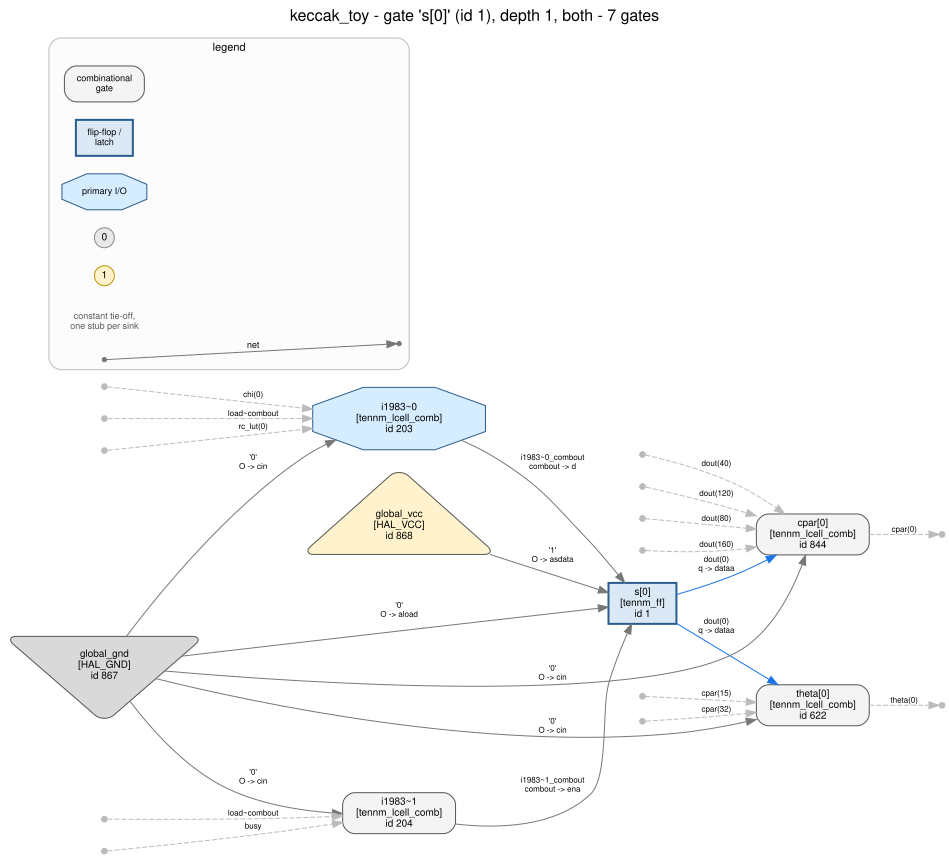
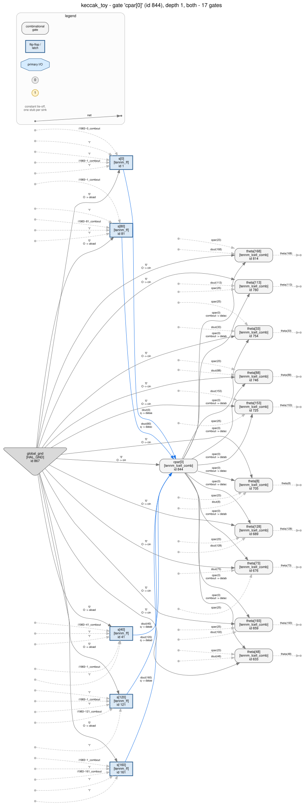
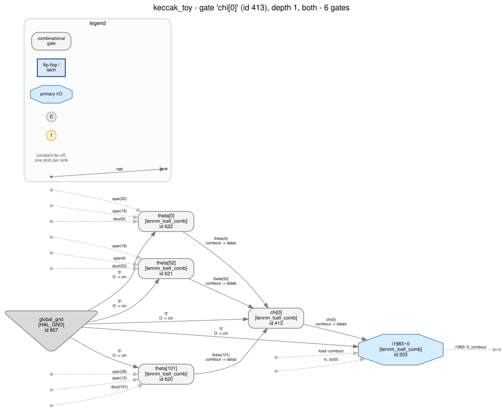
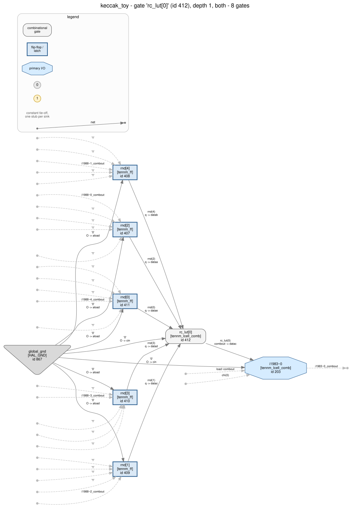

5 topological levels. Also written as a standalone page,
images/dag.html.Walkthrough 14 — Keccak-f[200]: recovering a 5 × 5
grid, twenty-five rotation offsets that are not signals, a 5-bit substitution
repeated forty times, and the one verdict in this series that is honestly
undetermined.
What is new here is the ending. Walkthroughs 11, 12
and 13 all finish with classical-style, and in each case that is
right. This one finishes with undetermined, and that is also
right: a sponge permutation is SHA-3, and it is equally the extendable-output
function inside ML-KEM, ML-DSA and SPHINCS+. Section 7 is about getting a tool
to say so instead of guessing.
design.v implements Keccak-f[200],
the smallest member of the Keccak-f permutation family (Bertoni, Daemen, Peeters
and Van Assche, The Keccak reference 3.0, 2011; the same construction at
width 1600 is KECCAK-p[1600,24] in NIST FIPS 202). Two hundred
bits of state as a 5 × 5 array of 8-bit lanes, eighteen rounds,
one round per clock cycle. spec.md was written
before the RTL and is the thing the recovered result is finally checked against.
One round is five steps, and only two of them cost any logic:
theta: C[x] = A[x][0] ^ A[x][1] ^ A[x][2] ^ A[x][3] ^ A[x][4]
D[x] = C[x-1] ^ ROTL(C[x+1], 1)
A[x][y] = A[x][y] ^ D[x]
rho: A[x][y] = ROTL(A[x][y], r[x][y]) <- pure wiring
pi: B[y][2x+3y] = A[x][y] <- pure wiring
chi: A[x][y] = B[x][y] ^ (~B[x+1][y] & B[x+2][y])
iota: A[0][0] = A[0][0] ^ RC[round](0,0).
At this lane width the constants are nonzero in only four bit positions.The port is the 25-byte state string in the sponge literature's own order:
lane (x,y) is byte x + 5y, bit z is bit
8(x + 5y) + z. There is no sponge here: no absorbing, no padding,
no rate/capacity split. The permutation is the part with structure in it, and it
is what the guide recovers.
Quartus Prime Pro 26.1, quartus_syn then
quartus_eda, device A3CW135BM16AE6S, no fitting. The
result is keccak_toy.vo, and the first
thing to ask of any export in this series is whether it is inside the primitive
coverage tools/hal_agilex validated:
python3 tools/hal_agilex --strict inventory \
examples/agilex3_walkthroughs/14_keccak_toy/keccak_toy.vohal_agilex/inventory/fully-covered,
proven_under_assumptions, histogram
{tennm_ff: 207, tennm_lcell_comb: 659} — two primitive types,
nothing else. No memory block, no DSP, no PLL, no I/O buffer.
i1988~4, the round counter's top bit, reported
extended_lut='on': the fracturable 7-input mode is not modelled. Its
next state is load ? 0 : rnd+1, and with load = start & ~run
inlined that is a seven-input cone — start, run
and all five counter bits — one past what a normal-mode ALM reads. The fix
is a /* synthesis keep */ on load, which makes it one
cell that 208 others read — every register's next-state logic plus the
shared clock enable — and drops the counter's top bit back to six
inputs. The keeps on cpar, theta and chi
are there for the same reason: unkept, a chi cell fuses with its load
multiplexer into a seven-input cone. Walkthrough
13 hit this wall too, and the
lesson generalises: on this device the RE-friendly coding style and the
in-coverage coding style are the same style, and it is worth saying which
one you were aiming at.
One keep has a second, more useful effect. Four of the eight bits of the
round constant are zero in every round, so Quartus reports four of the
rc_lut cells as redundant logic — and keeps them anyway. The
export therefore contains eight round-constant cells, four of
which compute a constant, which is how section 5 gets to read
RC[i] in all eight bit positions instead of four.
python3 examples/agilex3_walkthroughs/14_keccak_toy/analysis.py stats
python3 examples/agilex3_walkthroughs/14_keccak_toy/analysis.py registers| question | answer |
|---|---|
| instances | 866 — 207 tennm_ff, 659 tennm_lcell_comb |
| boundary | clk, rst_n, start, din[199:0] → dout[199:0], done, busy |
| register banks | s[199:0], rnd[4:0], and two single bits |
| clock / clear | one clk, one active-low clrn, on every flip-flop |
| enable groups | 200 / 7 — the whole state bank shares one ena net; the counter and the two flags are ungated |
The enable split is the first real lead, and it is worth a sentence because
walkthrough 13 had nothing like it: there, all 301 registers ran every cycle and
grouping by control pins said nothing at all. Here 200 registers stop and start
together on one net and seven do not, which separates “the thing being
computed” from “the thing that decides when to compute it”
before a single lut_mask has been read.

s[0]'s q feeds a 5-input cell and a 3-input cell, and
its d comes from a multiplexer. Seven gates. Drawn with
--const-hub; see section 4.s[0..199] and the kept wires really are called cpar,
theta and chi. Every derivation below is written to
work without them — cells are selected by what they read and what shape
their truth table has, never by their names — but nothing here is a claim
about recovering a core that was blinded first. Walkthrough 16 is where that
gets tested; walkthroughs 02, 03 and 10 ship anonymised netlists today.
Nodes are gates, edges are nets. The graph has cycles — the state feeds itself every round — but every cycle passes through a flip-flop, so cutting the edges that end on a flip-flop pin leaves a DAG, and that DAG can be levelled topologically:
python tools/hal_viz dag examples/agilex3_walkthroughs/14_keccak_toy/netlist.hal.v \
-g plugins/gate_libraries/definitions/AGILEX_TENNM.hgl --const-hub --max-gates 900 \
-o examples/agilex3_walkthroughs/14_keccak_toy/images/dag.svg --html5 topological levels. Also written as a standalone page,
images/dag.html.Five levels, and on this design the level profile is the round, step for step:
| level | nodes | what is in it |
|---|---|---|
| 0 | 209 | the 207 flip-flops, plus the shared GND/VCC hub |
| 1 | 51 | theta's parity planes: 40 column-parity cells — plus the control logic that reads registers directly, namely the eight round-constant cells, the terminal-count test, one counter cell and the load select |
| 2 | 208 | theta proper: 200 cells, one per state bit — plus the counter's next state and the two flags |
| 3 | 200 | chi: 200 cells, one per state bit |
| 4 | 200 | the load multiplexer, one cell per state bit — with iota fused into eight of them, the eight bits of lane (0,0) |
--const-hub, as in 11, 12 and 13. This design's constant fan-out
is 5979 consuming pins — the largest in the series —
and the default one-stub-per-pin spelling turns level 0 into a wall of circles
that is most of the file and none of the information. Drop the flag for the other
spelling; the level count is the same either way, but the edge count is not (the
hub draws a flip-flop's five tied control pins once instead of five times).
images/netlist_graph.svg is scoped to one gate's
neighbourhood, as 12 and 13 scope theirs. At 868 gates the unlevelled
whole-netlist drawing is not a diagram: the gate graph is cyclic, so dot
cannot layer it, and it does not finish. The same 868 nodes levelled
draw in seconds.
images/dag_interactive.html
is the same drawing with values on it: a self-contained clock-step page over
artifacts/dag_trace.json, whose window is 32 cycles from the load
that starts the published all-zero-state vector — the counter running
0…17, busy falling, done rising, and
dout carrying the answer for exactly one cycle before the next load.
Watching level 1 light up, then 2, then 3, then 4, eighteen times, is the round
schedule as a moving picture.
Every number below comes from
analysis.py, one function per step, and
every one of them is re-asserted by check.py.
The hard part of this design is not any single step: it is that the permutation's
algebra needs a 5 × 5 grid of 8-bit lanes and the netlist offers
two hundred flip-flops in a row. Steps 2 to 5 build that grid out of the wiring.
din and dout are both 200 bits, start
is one bit that is ignored while busy is high, and
dout is driven continuously — it is just the state register.
So the design is a 200-bit function computed over some number of cycles, and the
only question the boundary answers is “how many”, which step 7 gets
to.
Select cells by shape, not by name: cone taken back to the registers, exactly five sources, and the function is the XOR of all five. On this export that selects forty cells and nothing else. (The round-constant cells also read exactly five registers and are emphatically not an XOR of them, which is the point of testing the function rather than the fan-in.)

The forty five-element sets are disjoint and cover all 200 state bits. That is already a partition of the state into forty classes of five, and it is the first structural fact about the design: something in here treats the 200 bits as 40 groups of 5.
Two hundred more cells are a 3-input XOR of one flip-flop and two parity nets. All the cells belonging to one parity class read the same pair of classes, so each of the forty classes has exactly two neighbours — but the XOR is symmetric, so nothing says which neighbour is which.
Walking does. Suppose (this is the hypothesis, and it is about to be tested)
that one neighbour steps the column and leaves the bit index alone while the
other steps both. Then a five-step walk that takes a of the first
and b of the second moves the column by b - a and the
bit index by -b, so it can only return to where it started when
b = 0 and a = 5. Enumerate all
25 = 32 walks from each class; exactly one closes, and its
first step names the unrotated neighbour. That map turns out to have
eight cycles of length five, and composing it with the other
neighbour gives a map with five cycles of length eight.
Eight bit positions, five columns, five members per class. The 5 × 5 array of 8-bit lanes, recovered from nothing but which flip-flops get XORed together.
s[i] is
lane i/8 bit i%8 happens to be right here, and would be
a guess. This is a derivation, and on a blinded netlist it is the only kind
available.
Two hundred cells read exactly three theta nets. Their algebraic normal form
is b0 + b2 + b1·b2 — two linear terms and one product
— which tells the three operands apart with no ordering convention at all:
b1 is the variable that appears only in the product,
b2 in both, b0 only linearly. That is
b0 ^ (~b1 & b2), written out.

lut_mask, exactly as walkthrough 13's three AND terms were.Because b1 means “the next lane along the row”,
following it closes a cycle, and it closes at length five every time:
forty five-cycles. Those are the rows. Build the 5-bit map with
the inputs in each cycle's own order — the netlist's order, not the pass's
net-name order — and all forty give the same table:
00 09 12 0B 05 0C 16 0F 0A 03 18 01 0D 04 1E 07
14 15 06 17 11 10 02 13 1A 1B 08 19 1D 1C 0E 1FBijective, non-affine, algebraic degree 2, differential
uniformity 8, coordinate function
x0 ^ x2 ^ (x1 & x2). Matched against
tools/hal_crypto's library it is keccak_chi_5 at the
exact tier — not a bit permutation of it,
because the bit order came out of the netlist's own row cycle rather than out of
sorted net names.
python3 tools/hal_crypto sbox keccak_toy.vo and the answer is
no substitution box found, with the reason stated: 400
combinational net(s) read more than 12 sources, so their cones were not
enumerated. That is correct and it is not a bug. The pass cuts cones at
the flip-flops, and in this architecture chi reads the register bank
through theta, so a chi cone depends on up to 33
flip-flops. The hand recovery above works only because it cuts the cone at the
theta nets instead — one hop, not the whole cone — which is a
question no general pass knows to ask. Section 6 shows what the same command
does to the same permutation with the register moved half a round.
Zero cells. Zero nets. Zero vectors named after a rotation. What exists is a
200-bit permutation, and it is read off in one line: each chi cell's
b0 operand names a source state bit, and the flip-flop its output
eventually reaches names a destination state bit. That map is
rho followed by pi.
Turning it into a table needs lanes, and the lanes fall out of the map
itself. pi moves a whole lane to a whole lane, so for a given
destination column every destination lane has a different source column —
which means the pair (destination column, source column) names a lane
uniquely. That grouping gives 25 sets of 8 on the first try, and
if it had not, the hypothesis would have been wrong. Rows come from chi's
b1 chain, lifted from bits to lanes. The row labels come
from pi as well: the source lanes of the destination lanes in column
X all lie in one row, and that row is therefore row X.
Then the rotation amount of a lane is the bit-index difference across it, which is either constant over all eight bits or the whole recovery is wrong. It is constant. Twenty-five of them:
| y=0 | y=1 | y=2 | y=3 | y=4 | |
|---|---|---|---|---|---|
| x=0 | 0 | 4 | 3 | 1 | 2 |
| x=1 | 1 | 4 | 2 | 5 | 2 |
| x=2 | 6 | 6 | 3 | 7 | 5 |
| x=3 | 4 | 7 | 1 | 5 | 0 |
| x=4 | 3 | 4 | 7 | 0 | 6 |
That is the published rho table reduced mod 8, every entry. Three lanes
— (0,0), (3,4) and (4,3) —
rotate by zero at this width, which at width 64 they do not; the recovery has no
trouble with them because a zero shift is still a measured shift. And the lane
map itself comes back as (x,y) → (y, 2x+3y), checked for all
twenty-five, which is pi.
hal_crypto permutation has two tiers, and on this design they
give three different answers across the two exports:
| tier | keccak_toy.vo | keccak_retimed.vo |
|---|---|---|
| wiring — a net that is a differently indexed copy of another net | nothing | nothing |
| cone support — each destination bit's next state reads exactly one source bit, through one cell | nothing | the whole 200-bit map, theta → register bank v, 200 of 200 links, matching nothing in the library |
| by hand, steps 2–5 | the 25 rotation offsets and (x,y) → (y, 2x+3y) | |
The wiring tier reports nothing on either export because rho and pi are not
nets. The cone-support tier — the one walkthrough 12 needed to see the
PRESENT pLayer through a round-key XOR — wants each destination bit to
read exactly one source bit through one cell. On
keccak_retimed.vo that holds: theta is a kept vector
and only the final multiplexer sits between it and the register, so the tier
returns the entire composite. On keccak_toy.vo it does not:
chi sits between theta and the register, so no
destination bit reads one source bit, and the tier correctly reports nothing.
The same pipeline decision that hides chi from the S-box pass in section 6 hides
rho/pi from the permutation pass here, and for the same reason — one cell
per link versus two.
And note what even the good answer is not. A
200-bit index map matching nothing in the library is not twenty-five rotation
offsets and a lane transposition: no library carries a 200-bit Keccak rho-pi,
and turning the map into r[x][y] needs the lane geometry that
steps 2 to 5 built. The tier tells you that there is a bit permutation
and which bit goes where; it cannot tell you that the bits are lanes.
Eight cells read only the round counter and drive a state bit's next-state
multiplexer. All eight reach bits of the same lane, which is therefore
lane (0,0) — that fixes the origin of x. Four of
the eight compute a constant.

Which four are constant is a cyclic pattern of eight, and it is asymmetric
enough to be useful. Of the sixteen ways to choose an origin and a direction for
the bit index, exactly one makes the varying positions come out as
{0, 1, 3, 7} — the published 2^j - 1 pattern.
Enumerate the eight surviving cells over counter values 0…17 with that
labelling and the eighteen round constants are:
01 82 8A 00 8B 01 81 09 8A 88 09 0A 8B 8B 89 03 02 80state_encoding: as-stored | complemented). What makes it honest
rather than circular is that it is falsifiable: under any of the other fifteen
choices the recovered schedule matches nothing anyone has published, and
analysis.py fails loudly if more than one choice fits.
Two details worth keeping. RC[3] is 00, so round 3
has no iota at all — a step of the round that does nothing, on one round in
eighteen. And four of the eight lane bits are never touched by any round, which
is why the four constant cells matter: without the keep that
preserved them, the recovery would have seen a 4-bit constant and had to guess
where in the lane it sat.
One cell reads the five counter flip-flops and is true for exactly one of the
32 values: 17. So eighteen rounds, and
19 cycles from an accepted start to
done — one load plus eighteen.
count == 1151 is an eleven-input test,
and an in-coverage ALM reads six — so that design had to split the counter
into 64 × 18 and the recovery had to find two moduli and
multiply them. Eighteen fits in one cell, so here there is nothing to factor.
The interesting part is that the difference is a property of the number,
not of the cipher: the same ceiling that made 13 hard makes this easy.
Structure said: five parity planes, these twenty-five offsets, this 5-bit
substitution, eighteen rounds. This step reads none of that. It drives the
exported netlist as a black box with vectors out of the literature — the
eXtended Keccak Code Package's
tests/TestVectors/KeccakF-200-IntermediateValues.txt, which applies
the permutation repeatedly to the all-zero state — and looks at what comes
out.
| input | output after 19 cycles | published? |
|---|---|---|
00 × 25 | 3C2826841CB35C171EAAE9B811134CEAA3852C69D2C5ABAFEA | yes |
| the line above | 1BEF689492A8A543A5999FDB834E3166A14BE827D95040479E | yes |
Both, byte for byte, with busy high for exactly 18 of the 19
cycles. The all-zero input is the headline because it is the one vector for which
no byte-order convention could possibly matter; the second, whose input is dense,
is what pins the lane-to-byte map down.
Everything above was done by hand. Here is what the general-purpose pass makes of the same file:
python3 tools/hal_crypto identify \
examples/agilex3_walkthroughs/14_keccak_toy/keccak_toy.voStructural family: none-detected
Classical / PQC style: undetermined
S-box extraction: 0 bijective non-affine substitution(s) of 3..8 bits
shift registers: 0 chain(s) of at least 4 stages
ARX: no carry-chain adder of at least 4 bits; no fixed rotation
modular arithmetic: no add/subtract pair over the same operand registers
permutation layers: 0 non-identity bit map(s) between equally wide vectors
400 combinational net(s) read more than 12 sources, so their cones were
not enumerated
confidence: mediumnone-detected, on a real Keccak permutation, with every pass
honestly reporting what it did not find and the confidence dropped from
high to medium because a coverage limit was hit rather
than a clean negative reached. Nothing here is wrong. The design contains no
shift chain, no adder, no rotation that exists as a signal, and no substitution
whose cone is narrow enough to enumerate.
So the walkthrough ships a second export. retimed.v
is the same permutation, the same interface, the same nineteen cycles
and the same answer on dout when done is high. One
thing differs: where the register sits inside the round. Writing
g for pi·rho·theta and f_k
for iota_k·chi, a round is f_k·g and the
whole permutation is f_17·g·…·f_0·g.
design.v stores s_k; retimed.v stores
g(s_k). That is a retiming by half a round, it costs one extra
multiplexer on the last round, and it puts chi first after the
flip-flops instead of last.
keccak_toy.vo | keccak_retimed.vo | |
|---|---|---|
| instances | 866 | 1067 |
| chi cone width at the registers | 27–33 flip-flops | 3 flip-flops |
| S-boxes extracted | 0 | 40 |
| library match | — | keccak_chi_5, 37 exact + 3 bit_permutation |
| cone-support permutation | none | the 200-bit rho·pi map (section 5) |
| family | none-detected | sponge |
| confidence | medium | high |
| behaviour | identical | |
keep
and the S-box stops matching; move where the registers sit and it stops existing
as cones at all. This is the same point one level up, at the
pipeline: two exports of one algorithm, produced by the same tool with
the same settings, differing only in a retiming that any hardware engineer would
consider free, and the structural verdict flips from “nothing here”
to “a sponge, high confidence”. Before concluding that a design
contains no cryptography, ask whether the register placement could have dissolved
it.
keccak_chi_5 sat in the library with no netlist
shape that could reach it. The fix
(hal_crypto.sbox.cluster_supports) grows a candidate from one cone
by repeatedly taking the neighbour that brings the fewest new sources.
That qualifier is the whole of it: following any neighbour merges the
substitution layer with the load multiplexers sitting on top of it — on
this export it turns forty five-source clusters into one cluster of everything
— while following the cheapest one walks along chi and stops at the
multiplexers. Every pre-existing fixture and walkthrough verdict is unchanged,
byte for byte.
Here is where this walkthrough parts company with 11, 12 and 13. Each of
those ends with classical-style, and each time that is a real
finding: an ARX round, an SPN with a published S-box and a nonlinear feedback
register are structures classical symmetric cryptography is built from and
post-quantum cryptography is not.
A sponge is not like that. The same permutation is on both sides.
A, expanding seeds, hashing messages.So “there is a Keccak core on this die” is strong evidence about what the design computes and no evidence at all about which family of scheme it serves. What decides that is the arithmetic around the sponge — a number-theoretic transform over a small modulus says lattice, a syndrome decoder says code-based, a Merkle tree walker says hash-based — and none of it is inside the permutation.
Before this walkthrough, hal_crypto reported a sponge as
classical-style, on the general rule “S-boxes and shift
registers are classical structures”. That verdict was not just imprecise;
its accompanying caveat was actively wrong here, since it read “a
hash-based scheme contains neither NTTs nor S-boxes and would come back
none-detected” — and a SPHINCS+ accelerator is exactly a
design in which this pass would find a sponge. It now reports:
Structural family: sponge (confidence high)
Classical / PQC style: undetermined
A sponge permutation was found and no lattice/ring arithmetic was. That
places the design on neither side of the classical/PQC axis, because the
same permutation sits on both: SHA-3 and SHAKE are classical hashing, and
SHAKE is also the extendable-output function inside ML-KEM and ML-DSA and
the whole of SPHINCS+. 'A Keccak core is present' is therefore evidence
about what the design computes and no evidence at all about which family
of scheme uses it -- the surrounding arithmetic decides that, and none was
found here.The finding's status changes too, from heuristic to
unknown, and it carries no confidence number — because there
is no proposition to be confident about. Note that the family verdict is
still high confidence: “this is a sponge” is a strong
structural claim, and “therefore it is classical” is not a claim at
all. Keeping those two apart is the entire point.
undetermined is not a failure mode, and neither is
none-detected. A report that says “a Keccak-f permutation, 18
rounds, and nothing else in this netlist places it on the classical/PQC
axis” is more useful than one that picks a side, because it tells
the reader exactly what to go and look for next: the surrounding datapath. A
report that says classical-style because a sponge was found sends
them in the wrong direction with confidence attached. Walkthrough 15 (a toy NTT)
is the other half of this, and walkthrough 16 puts both in front of you blind.
recovered.v is the RTL written from the
netlist alone, every constant traceable to one step above.
recovered_reference.py is the
same claims as a Python model, and
tools/hal_agilex behavior simulates the exported netlist
against it:
| run | result |
|---|---|
netlist vs design.v model, 600 cycles | proven_bounded |
netlist vs recovered.v model, 600 cycles | proven_bounded |
| … with one rho offset moved by one bit | caught at cycle 9 |
| … with the AND in chi replaced by an XOR | caught at cycle 9 |
| … with the last round's constant wrong | caught at cycle 26 |
The second control is the counterfactual the whole design is about: delete the one AND term and Keccak-f[200] becomes a linear map over GF(2) — an invertible 200×200 bit matrix, a round of which is a matrix product. It is caught in nine cycles, which is what makes the AND load-bearing rather than decorative.
dout is driven continuously and one wrong round shows up
immediately. The third is different: a wrong constant in the last
round only changes the answer when a permutation actually reaches round 17. A
40-cycle run misses it entirely. An 80-cycle run catches it at
cycle 46. A 120-cycle run catches it at cycle 26.
Those three numbers are not a monotone sequence and
that is the interesting part: behavior asserts its asynchronous
clear at cycles // 3, so changing the bound changes the
stimulus, and an 80-cycle run clears the state at cycle 26 — exactly
where the divergence would have been — and only catches it on the next
permutation. A shorter run is not a prefix of a longer one.
That is walkthrough 08's coverage-hole lesson with a second twist on it, and it
is why check.py re-runs all three at a stated bound and separately
asserts that 40 cycles would have been too few.
proven_bounded is chosen to say so. What makes the overall result
strong is not the bound: it is that the structure and the behaviour were derived
independently, that the structure reproduces a published constant table it never
read, and that three deliberately wrong models are caught.
The HAL tier (check.py --with-hal) loads
netlist.hal.v through hal_py and re-derives the census
with a second reader and a second gate model: 868 gates (866 plus HAL's two
constant drivers), 659 ALMs elaborated, none refused. Its
strongly connected components are
{s} (840 gates, all 200 state registers),
{rnd, run} (15) and {fin} (2). The first is a
single lump and cannot be cut, and the reason is the property the permutation
exists to have: after one round every state bit depends on most of the state, so
“mutually reachable” is true of everything. Diffusion is exactly what
makes the coarse decomposition useless here — and the split it does
find, datapath from counter from flag, is the same one-way-coupling reading that
separated key schedule from data path in walkthrough 11.
recovered.v under quartus/ and diff
the primitive census against the original export. A match is corroboration, not
an equivalence proof.keccak_retimed.vo with the published vectors and confirm
it produces the same answers as keccak_toy.vo — and then look
at dout during the run, where the two disagree completely. Retiming
preserves the interface contract at done and nothing else.Synthesis (Windows, Quartus Prime Pro 26.1):
mkdir scratch && cd scratch
cp ../design.v ../quartus/keccak_toy.qpf ../quartus/keccak_toy.qsf ../quartus/build.tcl .
quartus_sh -t build.tcl
quartus_syn keccak_toy -c keccak_toy
quartus_eda --simulation --format=verilog --tool=questasim \
--output_directory=simulation keccak_toy -c keccak_toyThe counterfactual export is the same three commands with
retimed.v, quartus/keccak_retimed.qsf and the revision
name keccak_retimed.
Import and analysis (Linux, with a built HAL and Graphviz):
python tools/hal_agilex import keccak_toy.vo -o netlist.hal.v
export HAL_BASE_PATH=<build> HAL_PY_PATH=<build>/lib PYTHONPATH=<build>/lib
sh examples/agilex3_walkthroughs/14_keccak_toy/run_analysis.shcheck.py has two tiers: with no arguments it needs nothing but a
Python 3 interpreter (the structural analysis is tools/hal_agilex
and tools/hal_crypto, both HAL-free), and --with-hal
adds the tier that loads netlist.hal.v through hal_py
and re-derives the SCC decomposition.
Every number on this page is produced by
analysis.py and re-asserted by check.py; the findings
documents behind them are in artifacts/, and
artifacts/report.html is one page over all of them.